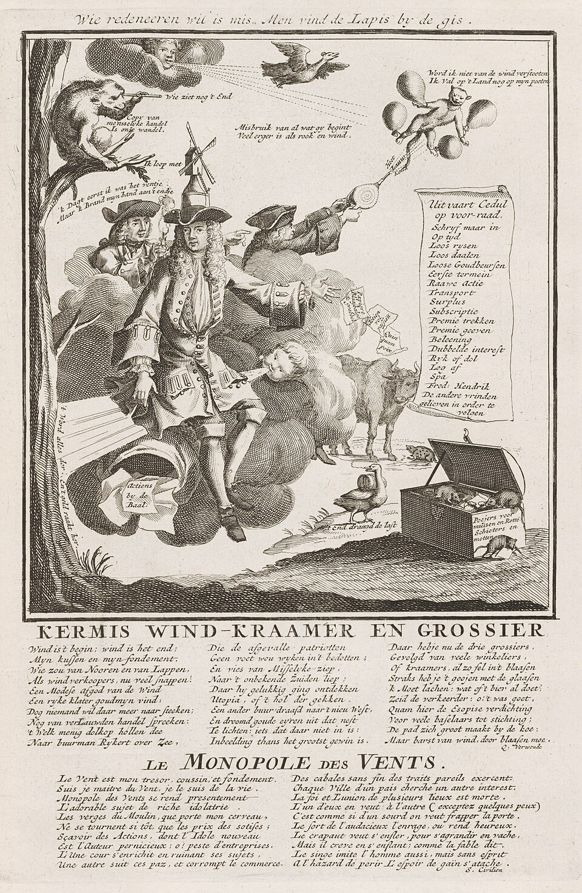
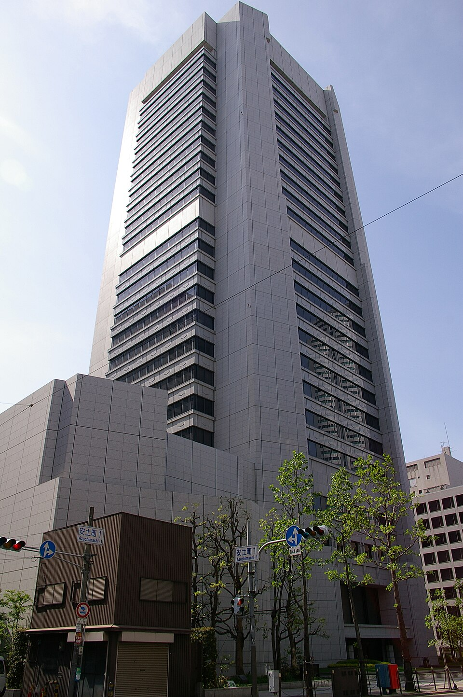
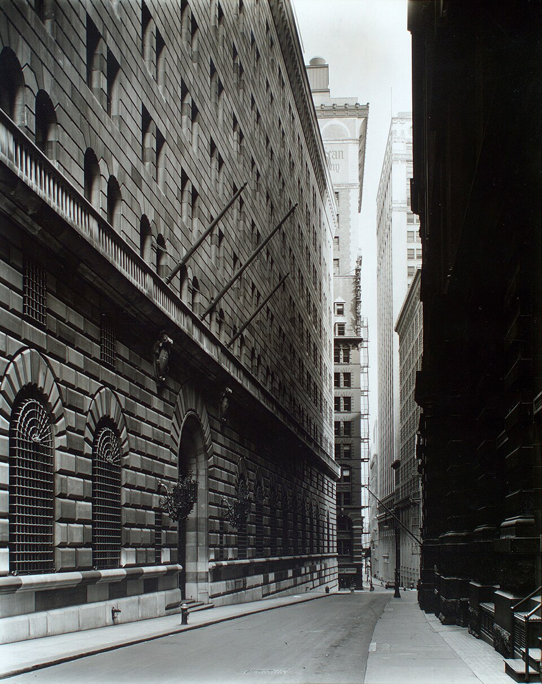
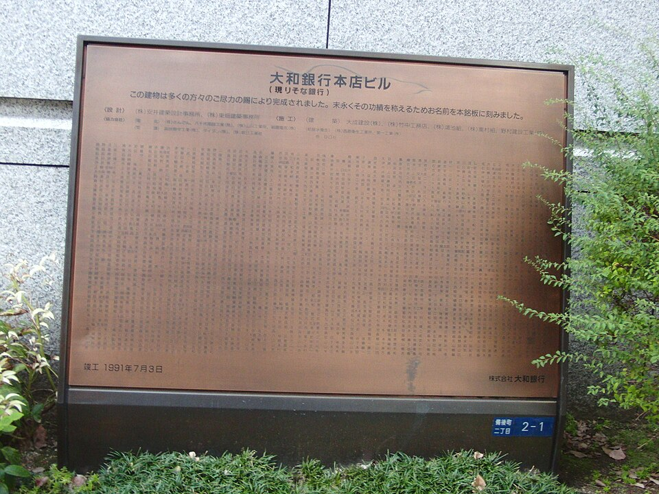
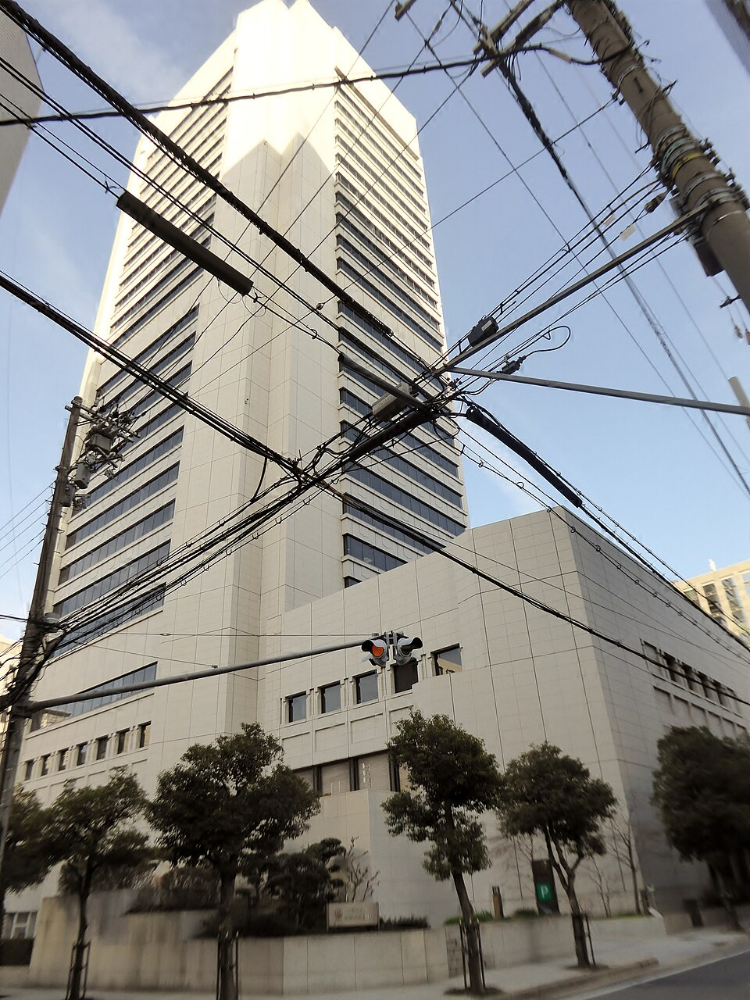
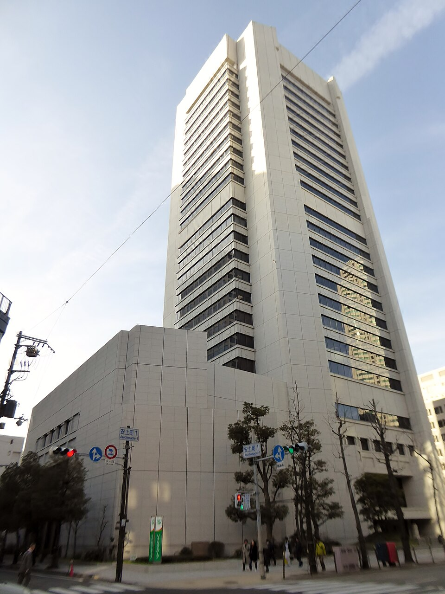
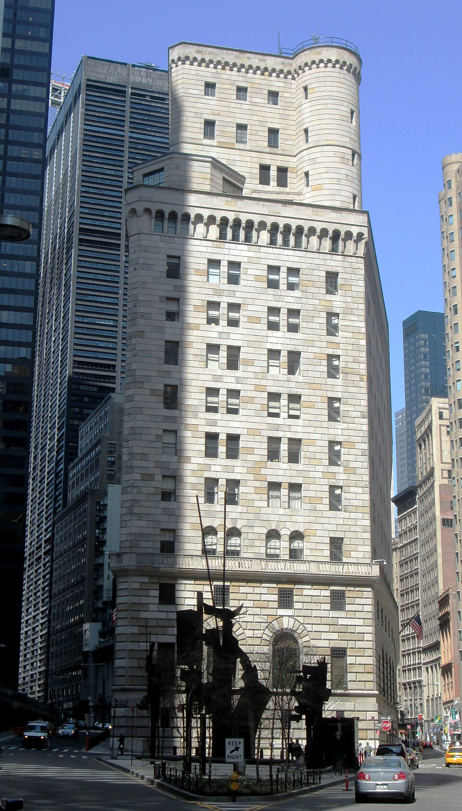

.jpg){kind=link}


井
井口俊英
いぐち・としひで
大和銀行NY支店副社長級・米国債トレーダー
役割：無断取引、帳簿改ざん、証券売却。告白書の作成
その後：米国で有罪答弁。懲役4年等22
1984年頃〜2003年
井口俊英は1984年頃から1995年まで米国債の無断取引を続け、約3万回の取引で約11億ドルの損失を発生させた。1
井口は取引、証券保管、記録管理に関与し。銀行と顧客の証券を無断売却して損失を隠した。大和銀行の本店・ニューヨーク支店幹部は1995年7月に損失を把握した後も米国当局への報告を遅らせた。2
米国当局は大和銀行に米国業務終了命令と3億4,000万ドルの刑事罰金を科した。日本では旧経営陣への株主代表訴訟が起こされ、大阪地裁判決と大阪高裁での和解に至った。3
大和銀行ニューヨーク支店では、1984年頃から井口俊英が米国債取引を担当した。井口は銀行の正式な承認を受けない取引を繰り返し、損失が出るたびに取引を続けて損失回復を図った。1995年までの約11年間に損失は約11億ドルに膨らみ、無断取引は約3万回に達した。大阪高裁決定は、担当取締役が証券ディーリング業務と監督体制を明確に分離しなかったため、井口が不正行為を隠蔽することが極めて容易になったと整理した。1
大和銀行ニューヨーク支店（以下「ニューヨーク支店」という）に勤務していた井口俊英（以下「井口」という）は，昭和59年から平成7年までの11年間にわたり無断取引を約3万回繰り返し，大和銀行に対して約11億米ドルの損失を被らせた（以下「本件無断取引」という）。 担当取締役は，ニューヨーク支店職員による同支店業務の執行に関し，適切な内部統制システムを構築し，これを実施すべき義務があった。そうであるのに，担当取締役は，ニューヨーク支店において，証券ディーリング業務体制と，その監督体制とを明確に分離した内部統制システムを構築も実施もしなかった。このため，証券ディーリング業務担当者である井口が，自らの不正行為を隠蔽することを極めて容易なものとした。
意味：裁判所は、取引回数・損失額だけでなく、経営者が内部統制を構築しなかったことと隠蔽可能性を結び付けた。
井口が発覚を免れた背景には。取引部門と証券保管・照合部門の分離が機能していなかったことがある。井口は取引だけでなく、証券保管や関連するバックオフィス業務にも関与した。米国当局は1992年と1993年に内部統制の不備を指摘した。大和銀行側は1993年11月に権限分離を行ったと説明したが、FRBは実際には井口が保管業務と一部の米国債取引に影響力を持ち続けたと判断した。井口は大和銀行自身や顧客の米国債を無断で売却し、保管記録と銀行記録を改ざんした。23
1995年7月、井口は大和銀行頭取宛てに告白書を送り、長年の無断取引と損失を明らかにした。米司法当局の起訴資料によれば、7月24日には大和銀行副頭取、常務級幹部、国際部門責任者らが井口に電話し。ニューヨーク支店を事件から切り離すことと損失を隠す方法について協力するよう求めた。7月下旬には井口、ニューヨーク支店長の津田正弘、大和銀行の幹部。Daiwa Trust社長がパークレーン・ホテルで会合した。3
大和銀行は1995年7月31日、損失を記載しない四半期報告をFRBに提出した。米国当局は、大和銀行とニューヨーク支店が少なくとも7月には無断取引、約11億ドルの損失、証券の流用、記録改ざんを把握していたにもかかわらず。監督当局への適時で十分な通知をしなかったと認定した。米司法省の起訴資料は、顧客証券の無断売却が3億7,200万ドルを超え、帳簿への虚偽記載、記録の移動、顧客への虚偽情報。FRBへの虚偽報告が行われたと記載している。23
1995年8月8日、大和銀行は大蔵省銀行局長に告白書の存在を報告した。政府答弁書によれば、大蔵省は銀行から事実確認を進めているとの説明を受けたが、その場で告白書の提出を求めず。米国当局にも直ちには伝えなかった。大蔵省から米国当局への連絡は9月18日まで遅れた。国会答弁では、8月8日の第一報から約40日間、米国当局への通知が行われなかったことが問題とされた。後年の政府答弁は、即時連絡をしなかった点について内外から厳しい批判を受けたと説明している。456
○益田洋介君 率直に今振り返りますと、あの問題が大和銀行の頭取から、要するに本人の告白が頭取に届いた直後に、こういう告白がありました、真偽はまだ定かじゃありません、早速役員等をニューヨークへ派遣して調査にかかりますという報告があったときに、担当者は、急いで調査をしてください、そして結果を報告してくださいと言って別れたわけでありますが、それから約四十日時間がたって、そして大和銀行から大蔵省に、精査をした結果こうこうこういう事態でありましたという公式の知らせがあったわけでございまして、この四十日という時間がやや長過ぎたという反省をいたします。 確かにその間、大蔵省、当時の担当部局は、例の木津信用、兵庫銀行がもういつ流出が起こって破綻するかわからない、そういう緊迫した日々を送っておりましたこともありますけれども、それにしても、もう少し早い時期に何回も大和銀行に督促してどうだどうだという努力をなぜしなかったのか、すればこの四十日があるいは三十日とか二十五日とかもう少し短縮できたかなという、そんな意味でやや反省をいたしているところでございます。
意味：国会で、大蔵省への正式報告までの約40日が長すぎたとの行政側の反省が明言された。
9月18日。大和銀行はFRBにニューヨーク支店の損失が約11億ドルに達したと報告した。9月25日に損失を公表し、9月23日にはFBIが井口を逮捕していた。10月2日、FRBとニューヨーク州銀行局などは内部統制不備、虚偽説明。損失隠蔽を理由に行政命令を発出した。10月9日には藤田彬頭取と阿部川正道会長が辞任を表明した。11月1日、米国金融当局は大和銀行の米国業務終了命令を出し、11月2日には大和銀行を24件で起訴した。783
1996年2月、大和銀行は米国で有罪答弁を行い、3億4,000万ドルの罰金を支払った。4月には元ニューヨーク支店長の津田正弘が損失隠蔽への関与について有罪答弁をした。津田は上層部や大蔵省の意向に従ったと法廷で述べたと報じられているが、大蔵省の直接指示が刑事判決で確定したことは今回確認できなかった。井口は1996年12月に懲役4年、罰金・賠償約260万ドルを言い渡されたと報じられている。日本では株主が旧役員49人を被告として約14億5,000万ドルの賠償を求め、2000年9月20日に大阪地裁が旧経営陣11人へ7億7,500万ドルの賠償を命じた。2001年12月10日、大阪高裁で旧経営陣49人が約2億5,000万円を支払う和解が成立した。9101112
1995年10月には、Daiwa Bank Trustで1984年から1987年に約9,700万ドルの別の米国債損失があり、ケイマン諸島などの海外関連会社を利用して損失を移転・隠蔽していたことも明らかになった。大和銀行は米国で清算計画に基づき業務を処理し、2003年5月5日に米国金融当局が1995年の行政命令を終了させた。事件の刑事手続は1995年から1996年、日本の株主代表訴訟は1995年から2001年、米国の清算・行政命令は2003年まで続いた。1314
この事件では、井口が取引と記録管理を同時に担い、津田がニューヨーク支店長として発覚後の対応に関与し。本店幹部が損失の扱いを決めた。藤田頭取と阿部川会長は事件後に辞任を表明した。大蔵省は8月8日に第一報を受け、米国当局への連絡を9月18日まで行わなかった。米国側ではFRBが内部統制、報告、記録を問題にし。司法省とFBIが起訴と逮捕に進んだ。大阪地裁と大阪高裁は、損失を発生させた個人の行為だけでなく、取締役による内部統制構築と監視の責任を判断した。2315
公表後の責任は、井口、津田、大和銀行、旧経営陣。監督当局に異なる形で分かれた。井口と津田については米国で刑事手続が進み、大和銀行については刑事罰金と行政命令が重なった。旧経営陣については株主代表訴訟で、ニューヨーク支店の業務を監視する取締役と監査役の義務が争われた。米国当局は銀行の米国業務を終了させ、日本の裁判所は会社内部の統制責任を判断した。事件の経過は、無断取引が長期間続いた時期、告白書を受け取った後に報告が遅れた時期。当局の処分と株主代表訴訟が続いた時期に分けて確認できる。11812
米国の処分は、1995年10月の同意命令、11月の米国業務終了命令。1996年2月の有罪答弁と罰金という順で進んだ。日本の責任判断は、1997年の大阪高裁決定を経て、2000年の大阪地裁判決と2001年の大阪高裁和解に至った。大和銀行の米国業務に関する行政命令が終了したのは2003年5月5日である。刑事、行政、民事の各手続は同じ事実を扱いながら。対象者と判断時期が異なっていた。刑事手続は個人と法人を対象とし、行政手続は米国業務と監督上の不備を対象とし、民事手続は旧役員の義務違反を対象とした。28912







| 大和銀行旧本店・現りそな銀行本店ビル | 大阪府大阪市中央区備後町2丁目2-1付近 | 告白書を受領し、対応を決めた本店 | 23 |
| パークレーン・ホテル | 36 Central Park South, New York, NY | 井口・銀行幹部の会合場所 | 3 |
| Federal Reserve Bank of New York | 33 Liberty Street, New York, NY | 監督・報告の中心 | 24 |
| Manhattan連邦地方裁判所 | 500 Pearl Street, New York, NY | 井口・津田・大和銀行の刑事手続 | 3 |
| 大阪地方裁判所 | 大阪府大阪市北区西天満2-1-10 | 株主代表訴訟一審 | 25 |
| 大阪高等裁判所 | 大阪府大阪市北区西天満2-1-10 | 2001年和解成立 | 12 |
| 大蔵省・財務省旧庁舎 | 東京都千代田区霞が関3-1-1付近 | 大蔵省への第一報と監督対応 | 4 |
取引担当者が取引、保管、記録管理に影響力を持ち。損失を証券売却と記録改ざんで隠した。発覚後も大和銀行の報告は遅れ、米国当局の行政命令と刑事手続につながった。23
いぐち・としひで
大和銀行NY支店副社長級・米国債トレーダー
役割：無断取引、帳簿改ざん、証券売却。告白書の作成
その後：米国で有罪答弁。懲役4年等22
つだ・まさひろ
NY支店ゼネラルマネージャー
役割：発覚後の隠蔽に関与
その後：1996年有罪答弁。禁錮2か月と報じられた3
ふじた・あきら
大和銀行頭取
役割：告白書を受領し、事件後に監督責任を負った
その後：1995年10月に辞任表明19
あべかわ・まさみち
大和銀行会長
役割：事件後の監督責任を負った
その後：1995年10月に辞任表明19
やまじ・ひろゆき
大和銀行常務級幹部
役割：7月下旬にニューヨークへ赴き井口と会合したと報じられた
その後：本調査でその後の処分は未確認19
やすい・けんじ
大和銀行副頭取
役割：津田の法廷供述に登場し、損失の移転案を求めたと報じられた
その後：本調査で刑事処分は未確認10
にしむら・よしまさ
大蔵省銀行局長
役割：大和銀行から第一報を受けた人物として国会で論議
その後：報告遅延が国会で問題化4
Mary Jo White
ニューヨーク南部地区連邦検事
役割：大和銀行起訴を公表
その後：検察として刑事手続を担当3
Alan Greenspan
FRB議長
役割：米上院で大和銀行問題を証言
その後：監督上の論点を説明7
James Kallstrom
FBIニューヨーク支局幹部
役割：大和銀行起訴発表に参加
その後：井口の逮捕・起訴に関与3
Eugene A. Ludwig
OCC長官
役割：外国銀行監督を議会で証言
その後：本調査でその後の処分は未確認26
被告法人・銀行
役割：損失把握後の報告と隠蔽、米国業務をめぐる刑事・行政手続の対象
その後：1996年に罰金3億4,000万ドル。2003年に行政命令終了9
大和銀行関連法人
役割：1984～1994年の過去損失を移転・隠蔽したと認定された法人
その後：米国資料で行政手続の対象13
株主代表訴訟原告
役割：旧役員の内部統制構築義務・監視義務違反を主張
その後：大阪地裁判決と大阪高裁和解に至った11
金融監督部局
役割：1995年8月8日に大和銀行から第一報を受けた
その後：米国当局への報告遅延が国会で指摘された5
井口の取引・保管・記録管理から、本店幹部の対応、監督当局の報告受領と刑事・民事手続までを。確認できた関係として示す。闇社会との接点は未確認のため、該当する線にもその状態を記載する。
上司と部下。井口は藤田頭取宛てに告白書を送り、損失を直接伝えた。藤田は事実確認を優先し、直ちに米国当局へは通知しなかったと政府答弁で説明された。参議院答弁書4
上司と部下／隠蔽関係。津田はNY支店長として、井口の損失発覚後の対応に関与し、後に有罪答弁した。Washington Post10
対立・確執。幹部は損失をすぐ公表せず、井口に隠蔽への協力を求めたと起訴資料に記載された。米司法当局資料3
上司と部下。山路は7月下旬にNYへ赴き、井口とパークレーン・ホテルで会合した人物として報じられた。Washington Post19
対立・確執。井口は検査で把握され得る取引を記録改ざんなどで隠し、FRBは内部統制と虚偽説明を問題にした。FRB2
庇護・口利き。津田は法廷で、上層部や大蔵省の意向に従ったと述べたと報じられた。大蔵省の直接指示は未確認。Washington Post10
盟友・同時辞任。頭取と会長は事件の監督責任を取り、同時期に辞任表明した。Washington Post19
報告者と監督者。藤田は大蔵省銀行局長に告白書の存在を説明し、西村側は早急な事実把握を求めた。参議院答弁書4
対立・確執。大蔵省が8月8日の報告を9月18日まで米国当局に伝えなかった点が国会で批判された。参議院会議録5
監督者と被監督者。グリーンスパンは米国上院で、大和銀行の米国業務問題と監督上の論点を説明した。FRASER7
検察と被告法人。ホワイトは大和銀行に対する24件の起訴を発表した。米司法省資料3
捜査官と被疑者。FBIニューヨーク支局は井口の逮捕・起訴に関与した。米司法省資料3
対立・確執。株主は内部統制と法令遵守監視義務違反を理由に代表訴訟を提起し、大阪地裁は一部認容した。判例研究11
金銭授受。大阪高裁の和解により旧経営陣49人が約2億5,000万円を銀行へ支払った。野村資本市場研究所12
対立・確執。FRBは大和銀行の報告遅延・虚偽説明・内部統制不備を理由に米国業務終了命令を発出した。FRB2
代表取締役，ニューヨーク支店長であった業務執行取締役などには，井口のディーリング業務を監督する任務がある。また，危険な証券ディーリング業務に伴う不正の発生拡大を防止するため内部統制システムを構築し，実施する義務がある。右代表取締役らはこれを怠った。 平取締役（右3以外の取締役）及び監査役には右システムの構築，実施の有無を点検，監視する義務の違反がある。 相手方らのいう信頼の権利ないし抗弁の主張のみで，抗告人らの本件代表訴訟が失当になるものではない。相手方らにおいてその前提事実の立証を要する。
意味：担当取締役だけでなく、平取締役・監査役にも内部統制を点検・監視する責任があると整理した。
暴力団、総会屋、仕手筋、個別政治家との関係は、今回確認した判決、行政資料、国会記録。大手報道の範囲では確認できない。大蔵省の報告遅延と銀行幹部の隠蔽は、闇社会との関係とは区別して表示する。
暴力団名・人物名とも確認できない 確認できない
組織・人物未確認 確認できない
組織・人物未確認 確認できない
個別政治家の関与未確認 確認できない
大蔵省銀行局・西村吉正局長 指摘
津田の法廷供述に基づく報道 報道
Daiwa Bank Trust、大和銀行関連会社 認定
井口、津田、大和銀行幹部。Daiwa Trust社長 認定
On September 18, 1995, Daiwa reported a loss exceeding $1 billion as a result of trading activities conducted at its branch in New York from 1983 to September 1995. These losses were not reflected in the books and records of the bank or in its financial statements, and their existence was concealed through liquidations of securities held in the bank's custody accounts and falsification of its custody records. Daiwa has indicted that, while its senior management learned about the trading losses at the New York branch on July 24, 1995, the senior management of Daiwa and its New York branch directed that those losses be concealed from U.S. bank regulatory and law enforcement authorities and the public for almost two months and also directed the continuation of transactions designed to avoid the disclosure of Daiwa's losses.
意味：米当局は、経営上層部が損失を知った後も約2か月間、当局・司法・公衆から隠すよう指示したと公表した。
| 米国裁判所 | 1996-12 | 懲役4年、罰金・賠償約260万ドルと報じられた |
詐欺、横領。帳簿改ざん等。確定状況の判決原文は未確認22
| 米国裁判所 | 1996-04 | 有罪答弁。禁錮2か月と報じられた |
損失隠蔽共謀。判決原文は未確認10
| 米国裁判所 | 1996-02-26 | 有罪答弁、罰金3億4,000万ドル |
24件の起訴。確定9
| 大阪地裁 | 2000-09-20 | 総額7億7,500万ドル、約829億円の賠償命令 |
内部統制構築義務・米国法令遵守監視義務違反。控訴審で和解11
| 大阪高裁 | 2001-12-10 | 約2億5,000万円を支払う和解 |
株主代表訴訟に関する賠償。確定判決ではなく和解12
| FRB・ニューヨーク州銀行局 | 1995-10-02 | 同意命令 |
| 米国金融当局 | 1995-11-01 | 米国業務終了命令 |
| FRB | 2003-05-05 | 行政命令終了 |
According to Iguchi's written confession, from 1984 until the middle of 1995, he cumulatively lost about $1.1 billion in trading of U.S. Treasury securities. Due to the lack of controls necessary for a safe and sound trading operation, Iguchi asserts that he was able to hide the losses from others at the branch, auditors, and examiners from the Reserve Bank and the Superintendent. Iguchi states that, because he was responsible for the branch's custodial department, he was able to sell securities from Daiwa's own accounts, as well as securities of customers for which the branch acted as custodian, in order to cover his losses. Iguchi further states that, because he was able to influence the performance of the branch's backroom operations, he was in the position to falsify accounting and other branch records in order to hide from auditors and examiners the trading losses and the misappropriation of securities.
意味：井口氏が取引・保管・記録管理を同時に掌握していたため、銀行資産と顧客証券を損失穴埋めに使い帳簿を改ざんできた構造が示される。
In November 1992 and again in November 1993, the Reserve Bank and the Superintendent criticized the poor internal controls at the New York Branch. Both the Reserve Bank and the Superintendent were led to believe by Iguchi and other officials at the New York Branch that lines of authority were changed in November 1993 so that Iguchi no longer was responsible for both the branch's trading and custodial operations. The Board of Governors has reasonable cause to believe that Daiwa and the New York Branch did not change the reporting lines and that, in fact, Iguchi continued to exercise control over the branch's custodian operations as well as some of its U.S. Treasury securities trading operations. By at least July 1995, Daiwa and the New York Branch were aware of Iguchi's unauthorized trading, the resulting losses of about $1.1. billion, the misappropriation of securities from Daiwa's accounts and from its customers' accounts, the falsification of branch records and the misrepresentations to auditors and examiners. Notwithstanding the fact that this information was material to the veracity of the New York Branch's books and records and the ability of the Reserve Bank and the Superintendent to supervise adequately the New York Branch, Daiwa and the New York Branch failed to provide the regulators with timely and adequate notice of this matter.
意味：形式上の職務分離を装いながら実際には権限を維持し、銀行側が少なくとも1995年7月には不正を把握していたとする当局認定である。
Daiwa and the New York Branch permitted an official to engage in the trading of U.S. Treasury securities without adequate supervision. Moreover, contrary to safe and prudent banking practices, Daiwa and the New York Branch did not adequately separate the trading function from the backroom operations, thereby permitting Iguchi to influence the performance of recordkeeping and internal controls over his own trades. In contravention of safe and prudent banking practices, Daiwa and the New York Branch permitted Iguchi to oversee the branch's custodial operations, thereby giving him unlimited access to Daiwa's, as well as customers', securities held in custody. As a result of these unsafe and unsound practices, Iguchi was able to engage in unauthorized trading activities that resulted in losses of approximately $1.1 billion and was able to hide the losses by misappropriating securities from Daiwa and its customers, by falsifying the branch's records, and by lying to the Reserve Bank, the Superintendent and auditors.
意味：損失の原因を個人の暴走だけに帰さず、監督・職務分離・保管管理を怠った組織の実務として描いている。
The charges arise out of the unauthorized sale of securities from DAIWA's custody account, including the sale of more than $372 million in customer securities, by Toshihide Iguchi, a former Executive Vice President at the New York Branch, which were used to cover trading losses incurred by Iguchi; Iguchi's attempts to cover-up those losses and unauthorized sales, which by 1995 had grown to more than $1.1 billion; and DAIWA'S attempts to continue the cover-up after learning of Iguchi's illegal conduct. According to the Indictment, DAIWA learned in mid-July 1995 that Iguchi had lost more than $1.1 billion through unauthorized trading in United States government securities, and the sale of securities belonging to DAIWA's customers to conceal those losses. Rather than disclose IGUCHI's crimes to law enforcement authorities, as DAIWA was required by law to do, DAIWA allegedly attempted to conceal the losses and missing securities by, among other things: making extensive false entries in its books and records to hide the losses and preclude law enforcement action in the United States; removing the records of these crimes from DAIWA's New York offices and secreting them in the apartment of the manager of DAIWA's New York Branch; sending false account information to its customers; filing a false report with the Federal Reserve Board; and otherwise attempting to prevent law enforcement officials from discovering these crimes.
意味：顧客証券の売却や帳簿への虚偽記載と証拠の移動及び顧客への虚偽情報とFRBへの虚偽報告が列挙されている。
On September 18, 1995, Daiwa reported a loss exceeding $1 billion as a result of trading activities conducted at its branch in New York from 1983 to September 1995. These losses were not reflected in the books and records of the bank or in its financial statements, and their existence was concealed through liquidations of securities held in the bank's custody accounts and falsification of its custody records. Daiwa has indicted that, while its senior management learned about the trading losses at the New York branch on July 24, 1995, the senior management of Daiwa and its New York branch directed that those losses be concealed from U.S. bank regulatory and law enforcement authorities and the public for almost two months and also directed the continuation of transactions designed to avoid the disclosure of Daiwa's losses.
意味：米当局は、経営上層部が損失を知った後も約2か月間、当局・司法・公衆から隠すよう指示したと公表した。
Very briefly, as background, on September 18, 1995, Daiwa Bank met with a Federal Reserve representative and reported that Daiwa's New York branch had incurred losses of $1.1 billion from trading activities undertaken by Toshihide Iguchi, a branch official, over a period of eleven years. These losses were not reflected in the books and records of the bank or in its financial statements, and their existence was concealed through liquidations of securities held in the bank's custody accounts and falsification of its custody records. Although Daiwa indicates that its senior management learned about these trading losses in July, they concealed the losses from U.S. banking regulators for almost two months thereafter. Moreover, they directed Mr. Iguchi to continue transactions during the two-month period that avoided the disclosure of the losses. We understand that some officials at the Japanese Ministry of Finance were informed in early August about Daiwa's losses. They did not instruct Daiwa to inform the U.S. authorities; nor did they themselves do so. This lapse on the part of the Ministry of Finance is regrettable because open communication and close cooperation among supervisory authorities are essential to the maintenance of the integrity of the international financial system.
意味：米国側の公式証言は、大和銀行経営陣だけでなく、大蔵省関係者への早期伝達と米当局への未通知も問題にした。
大和銀行ニューヨーク支店（以下「ニューヨーク支店」という）に勤務していた井口俊英（以下「井口」という）は，昭和59年から平成7年までの11年間にわたり無断取引を約3万回繰り返し，大和銀行に対して約11億米ドルの損失を被らせた（以下「本件無断取引」という）。 担当取締役は，ニューヨーク支店職員による同支店業務の執行に関し，適切な内部統制システムを構築し，これを実施すべき義務があった。そうであるのに，担当取締役は，ニューヨーク支店において，証券ディーリング業務体制と，その監督体制とを明確に分離した内部統制システムを構築も実施もしなかった。このため，証券ディーリング業務担当者である井口が，自らの不正行為を隠蔽することを極めて容易なものとした。
意味：裁判所は、取引回数・損失額だけでなく、経営者が内部統制を構築しなかったことと隠蔽可能性を結び付けた。
代表取締役，ニューヨーク支店長であった業務執行取締役などには，井口のディーリング業務を監督する任務がある。また，危険な証券ディーリング業務に伴う不正の発生拡大を防止するため内部統制システムを構築し，実施する義務がある。右代表取締役らはこれを怠った。 平取締役（右3以外の取締役）及び監査役には右システムの構築，実施の有無を点検，監視する義務の違反がある。 相手方らのいう信頼の権利ないし抗弁の主張のみで，抗告人らの本件代表訴訟が失当になるものではない。相手方らにおいてその前提事実の立証を要する。
意味：担当取締役だけでなく、平取締役・監査役にも内部統制を点検・監視する責任があると整理した。
○益田洋介君 率直に今振り返りますと、あの問題が大和銀行の頭取から、要するに本人の告白が頭取に届いた直後に、こういう告白がありました、真偽はまだ定かじゃありません、早速役員等をニューヨークへ派遣して調査にかかりますという報告があったときに、担当者は、急いで調査をしてください、そして結果を報告してくださいと言って別れたわけでありますが、それから約四十日時間がたって、そして大和銀行から大蔵省に、精査をした結果こうこうこういう事態でありましたという公式の知らせがあったわけでございまして、この四十日という時間がやや長過ぎたという反省をいたします。 確かにその間、大蔵省、当時の担当部局は、例の木津信用、兵庫銀行がもういつ流出が起こって破綻するかわからない、そういう緊迫した日々を送っておりましたこともありますけれども、それにしても、もう少し早い時期に何回も大和銀行に督促してどうだどうだという努力をなぜしなかったのか、すればこの四十日があるいは三十日とか二十五日とかもう少し短縮できたかなという、そんな意味でやや反省をいたしているところでございます。
意味：国会で、大蔵省への正式報告までの約40日が長すぎたとの行政側の反省が明言された。
○筆坂秀世君 アメリカ通貨当局が、この巨額損失を十一年間も放置し事件発覚後もひたすら組織ぐるみの隠ぺい工作に狂奔した大和銀行に対し、アメリカからの追放という厳罰を科しました。なぜなら、ニューヨーク連邦地検の起訴事実を見ても明白なように、大和銀行頭取と銀行局長の会談直後から大和銀行がやったことは、事実の調査究明などではありません。証拠隠滅、虚偽報告、にせ取引等々、ひたすら隠ぺい工作をはかることであり、これでは大蔵省黙認の隠ぺい工作だったと言われても仕方がないではありませんか。 ○国務大臣（武村正義君） 次に大蔵省黙認の隠ぺい工作だったのではないかという御指摘でありますが、そんなことは全くありません。
意味：国会では、野党の「大蔵省黙認」追及に対し、大蔵大臣が明確に否定する緊張した応酬が行われた。
○政府委員（日野正晴君） 御指摘の大和銀行事件といいますのは、同行のニューヨーク支店において、有価証券の売買ディーラーが約十一年間にわたり不正な売買を行いまして約一千百億円の損失を発生させた。この事件におきます当時の大蔵省銀行局の対応につきましては、平成七年九月二十六日、本事件が公表になりましたが、この公表に先立つ同年八月八日に大和銀行から、この事故者からの私信として、プライベートなレターとして、米国債の取引により約十億ドル以上の損失を生じさせたとの告白が大和銀行の頭取あてに届いたという報告を受けていたのにもかかわらず、直ちに米国の監督当局に知らせるような指示をせず、大蔵省みずからも直ちに知らせることはしなかったといった点につきまして、内外からの厳しい批判を受けたものであると承知しております。
意味：後年の政府答弁は、告白書の存在を8月8日に把握しながら、米国監督当局への即時連絡をしなかった事実を認めている。
According to Tsuda's courtroom confession, Hiroyuki Yamaji, then a Daiwa managing director, came to New York with another Daiwa executive in late July after Iguchi had sent several letters to the bank's management confessing his deeds. At that time, Yamaji allegedly decreed that the bank should delay disclosing its losses for several months, which Tsuda said was motivated by a desire to avoid hurting the price of Daiwa's stock and the share prices of other Japanese firms. In early August, Tsuda said, he spoke with Daiwa deputy president Kenji Yasui, who "asked that I see if it were possible to devise a plan that would have the effect of transferring the trading loss to the Cayman Islands," where the disclosure rules would be less strict. On Aug. 8 the deputy president told Tsuda of a meeting he had had with Finance Ministry officials, who "warned Daiwa that disclosure before October would be disastrous for the Japanese economy," Tsuda said. At a meeting in Japan later that month, the deputy president urged that the losses be concealed permanently. He was later overruled by the bank's president, who favored disclosure in October.
意味：元支店長の法廷供述として、株価・日本経済への影響を理由に、損失をケイマン諸島へ移す案や永久隠蔽案が検討されたと報じられている。
大和銀行側：当初、井口個人の無断取引による被害者という立場を強調した。19
米司法当局：本店・NY支店幹部が損失把握後も隠蔽を続け、銀行自身が犯罪主体になったと主張した。3
大和銀行側：損失把握時点では告白書の真偽が不明で、事実確認が必要だったと政府に説明した。4
国会での批判：8月8日の第一報から約40日間、米国当局への通知が行われなかった点を問題にした。5
津田：上層部・大蔵省の意向に従ったと主張したと報じられている。10
調査結果：大蔵省の直接指示が刑事判決で確定した資料は未確認である。27